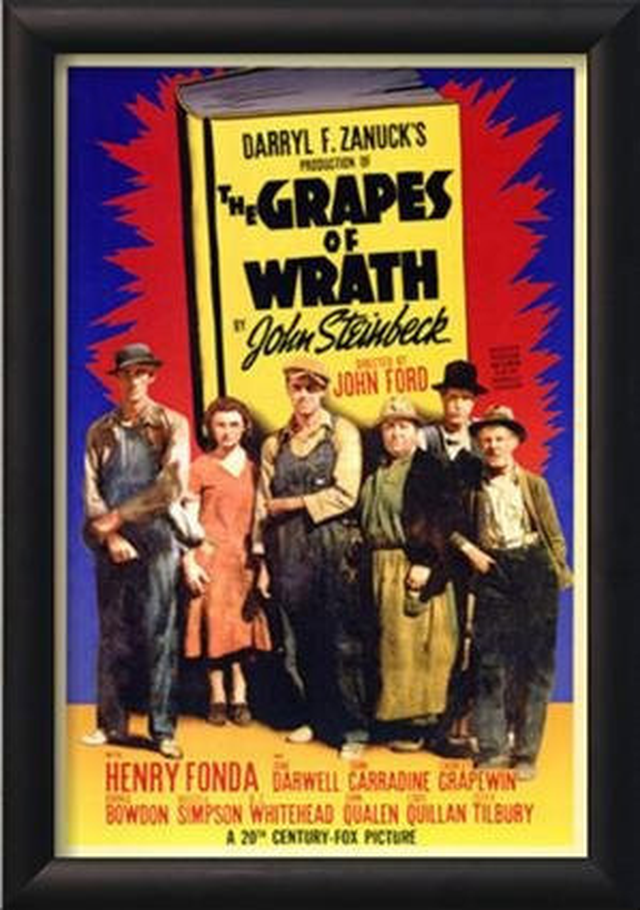
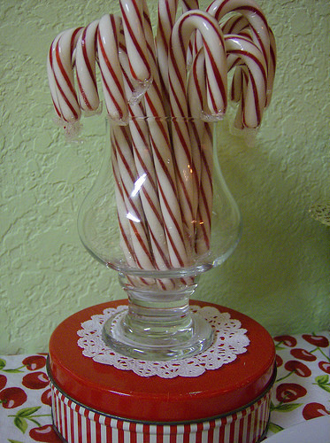
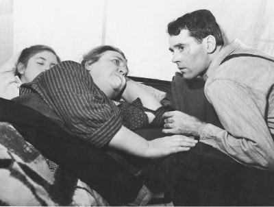

분노의 포도, 그리고 1센트짜리 캔디
게시: 2018-09-20T06:30:00+09:00

분노의 포도, 존 스타인벡 작 (배경 1930년대 미국) -------------------
(미국 중부의 수만명의 소작농들이 은행에 땅을 빼앗기고 삶의 터전을 잃은 끝에, 포도와 오렌지가 가득하다는 캘리포니아로 무작정 떠납니다. 대개 중고차 상인에게 속아서 산 고물 트럭에 남루한 가재도구와 지친 식구들을 싣고, 몇푼 안되는 여비를 가지고 긴 여행을 떠나는 소작농들의 행렬이 긴 66번 국도를 메우다시피 합니다. 여기서는 어떤 소작농 가족이, 도로변 휴게소에 차를 세우고 물과 빵을 구합니다. 당연히 휴게소 주인 내외는 이들이 반갑지 않습니다.)
"우리는 배가 고파서 그렇습니다." 하고 사나이가 말했다.
"그럼 샌드위치를 사시지 그래요. 맛있는 샌드위치와 햄버거가 있어요."
"그렇게 하고 싶은 생각이야 간절합니다만, 아주머니, 하지만 어디 그럴 수가 있어야지요. 10센트로 식구가 다 먹어야 하니까요." 그는 계면쩍은 듯이 말했다. "가진 돈이 얼마 안 돼서 그러는 겁니다."
메이가 말했다. "10센트로는 빵 한덩이도 못 사요. 우린 15센트짜리 빵 밖에 없어요."
그녀의 뒤에서 (남편인) 앨이 소리쳤다. "원 세상에, 메이, 어서 빵을 드려."
"그러면 식빵 차가 오기 전에 떨어질 텐데."
"빌어먹을, 떨어지면 떨어지는 거지." 하고 앨이 말했다. 그러고 나서 그는 방금 뒤적거리고 있던 감자 샐러드를 찌푸린 얼굴로 내려다보았다.
메이는 포동포동한 어깨를 움츠리며 난처하다는 듯이 트럭 운전사들 쪽을 쳐다보았다.
그녀가 망사문을 열어 주자 사나이는 땀냄새를 풍기면서 안으로 들어왔다. 아이들도 그 뒤를 따라 슬그머니 들어와 곧장 캔디 상자 쪽으로 가더니 물끄러미 그 안을 들여다보았다. 단순히 먹고 싶다는 욕망이나 기대의 시선이 아닌, 이 세상에는 이런 것도 있었던가 하는 일종의 경이의 시선이었다. 두 아이는 키도 같았고 얼굴 생김새도 비슷했다. 한 아이가 먼지투성이 복사뼈를 다른 발의 발가락으로 긁적거렸다. 또 한 아이가 나직이 뭐라고 속삭였다. 그리고 두 아이는 팔을 쭉 폈다. 그러자 작업복 호주머니 속에 들어 있는 꽉 쥔 두 주먹이 푸른 색의 엷은 천을 통해서 뚜렷이 보였다.
메이가 서랍을 열고 파라핀 종이에 싼 길쭉한 빵 한 덩어리를 꺼냈다. "이건 15센트짜리에요."
사나이는 모자를 뒤로 젖혔다. 여전히 굽신거리는 태도로 그는 말했다. "저어, 이 빵을 10센트어치만 잘라 주실 수 없으시겠습니까 ?"
앨이 호통치듯 말했다. "제기랄, 메이, 그 빵 다 줘 버려."
사나이가 앨을 돌아다보았다. "아닙니다. 우리는 10센트어치의 빵을 사려는 것입니다. 우리는 말씀입니다, 아저씨, 캘리포니아에 도착할 수 있도록 세밀히 계산을 해놓고 있습니다."
메이가 단념하고 말했다. "10센트에 그냥 가져가세요."
"그렇게 하면 강탈해 가는 것이 됩니다, 아주머니."
"괜찮아요, 앨이 그렇게 하라니까." 그녀는 파라핀 종이에 싼 빵을 카운터 너머로 밀었다. 사나이는 속이 깊숙한 가죽 지갑을 바지 뒷주머니에서 꺼내어 끈을 풀었다. 은전과 때묻은 지폐가 가득 들어 있었다.
"너무 째째하게 군다고 생각하실지 모르겠습니다만," 하고 그는 변명조로 말했다. "아직도 갈 길이 천 마일이나 남았습니다. 게다가 용케 거기까지 갈지 어떨지도 모르겠고요." 그는 집게손가락으로 지갑을 더듬어 10센트 짜리 하나를 집어올렸다. 카운터 위에 올려놓고 보니 1센트짜리가 한 닢 달라붙어 있었다. 그는 그 1센트를 도로 지갑에 넣으려다가 캔디 상자 앞에 얼어붙은 것처럼 서 있는 아이들에게 눈이 갔다. 그러고는 상자 안에 있는 커다랗고 알록달록 무늬진 긴 박하사탕을 가리켰다. "저건 1센트짜리 사탕입니까, 아주머니 ?" 하고 물었다.
메이가 그리고 가서 들여다보았다. "어느 거요 ?"
"저기 저 줄무늬진 것."
아이들은 그녀의 얼굴을 쳐다보며 숨을 죽였다. 입을 반쯤 벌리고, 반벌거숭이 몸뚱이가 긴장으로 뻣뻣해졌다.
"아, 저거요 ? 아, 아니에요. 두개에 1센트에요."
"그럼 두 개 주십시요, 아주머니." 그는 1센트 동전을 조심스레 카운터에 놓았다. 메이는 커다란 사탕을 눈앞에 내밀었다.

(...중략... 농부 일가족이 트럭에 타고 떠납니다.)
빅 빌(손님으로 앉아있던 트럭 운전수)이 휙 돌아앉으며 말했다. "그건 1센트에 두 개짜리 사탕이 아니지."
"그게 당신과 무슨 상관이에요 ?" 하고 메이가 강한 어조로 말했다.
"저건 한 개에 5센트짜리 사탕이쟎아." 빌도 지지 않았다.
"슬슬 가 봐야지." 하고 또 한 사나이가 말했다. "꽤 오래 한눈팔았으니까." 그들은 호주머니에 손을 넣었다. 빌이 카운터 위에 은전 한 닢을 놓았다. 그러자 동행인도 그것을 보더니 호주머니에 손을 넣어 은전 한 닢을 놓았다. 그러고는 둘이 몸을 돌려 문 쪽으로 걸어갔다.
"잘 먹고 가오." 하고 빌이 말했다.
메이가 불렀다. "여보세요 ! 잠깐만. 여기 거스름돈 있어요."
"그건 또 뭔 소리람." 빌이 말하고는 망사문을 꽈당 닫았다.
----------------------------------------------------------------

'분노의 포도'는 존 스타인벡에게 풀리쳐상을 안겨준 불후의 명작입니다. 이 소설은 1937년, 스타인벡이 실제로 캘리포니아로 이동 중인 오클라호마 출신 '난민' 소작농들의 행렬에 동참한 경험을 바탕으로 2년 후에 완성한 것입니다. 이때 스타인벡은 이 오클라호마 출신의 난민들과 함께 캘리포니아로의 긴 여행을 한 뒤, 그들과 함께 막노동을 하며 그들의 삶을 같이 체험했습니다.
당시 미국은 1928년 대공황의 여파로, 많은 은행과 공장들이 문을 닫고, 미국의 총 노동인구 3분의 1에 해당하는 1천만명이 실업자 상태였습니다.
특히 저 오클라호마 소작농들은, 원래 소규모 자영농으로 시작했으나, 거듭되는 흉년으로 은행 빚을 조금씩 지다가 결국 은행에 땅을 넘기고 소작농 신세가 됩니다. 치열한 경쟁 속에서, 은행은 수익을 내야 하므로, 트랙터로 농장일을 자동화 해서 더 많은 수익을 내기 위해 소작농들을 내쫓습니다. 그래서 저 위에 나온 것처럼 많은 오클라호마 농부들이 일자리를 찾아 캘리포니아로 나서게 된 것입니다. 캘리포니아에서는 이런 난민들을 경멸하여 오키라고 불렀습니다.
이때 이렇게 대이주에 나선 사람들의 숫자는 대략 25만명에 달했습니다. 이들이 캘리포니아에 도착했을 때, 그들을 기다리고 있던 것은 이렇게 넘쳐나는 노동력을 착취하려는 자본가들 뿐이었습니다.
하지만 저 윗 장면은, 이런 각박한 세상 속에서도 인정은 살아있다는 것을 보여주는 한 대목입니다. 저런 작은 자비가 바꾸어놓는 것은 아무것도 없는 것일까요 ? 숫자 상으로는 아무 것도 없겠지만, 사람들이 살아가는 사회에서는 많은 것을 바꾼다고 생각합니다.
여러분, 어려운 시절일 수록 절실한 사람들을 위한 작은 온정을.